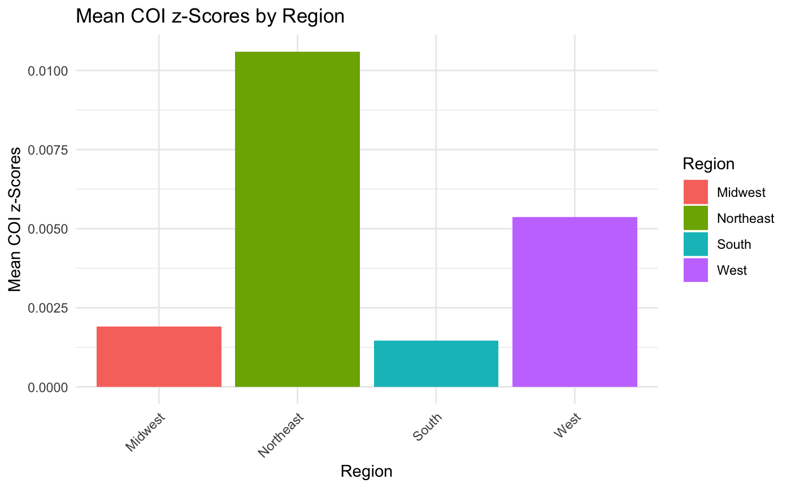
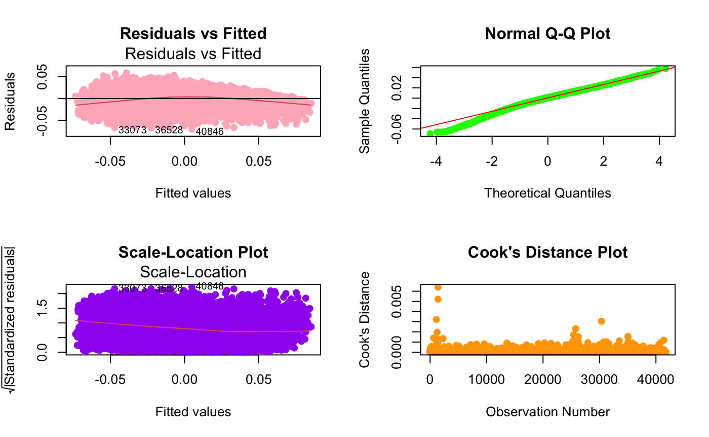
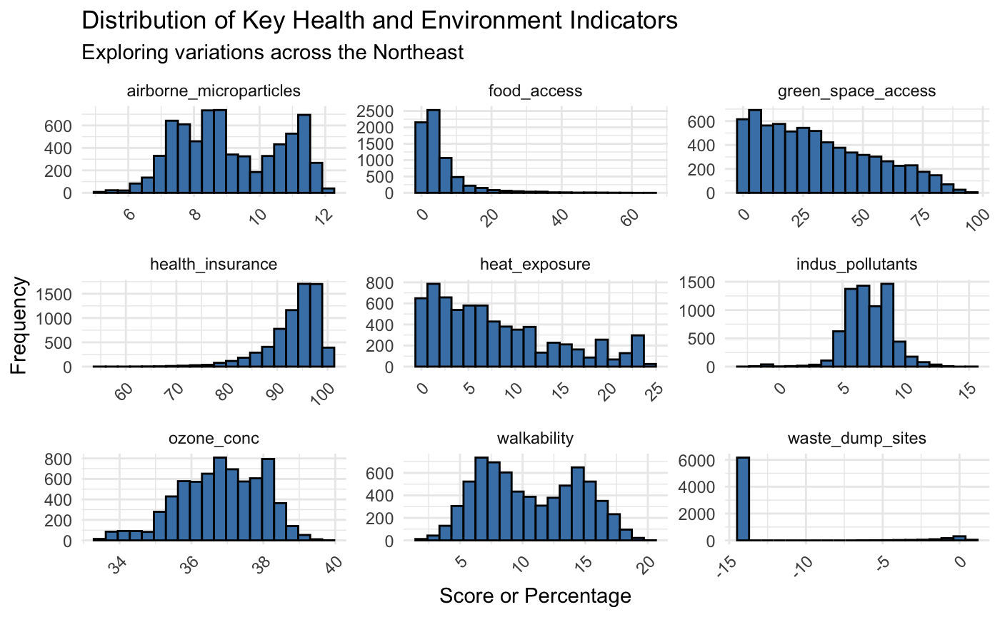
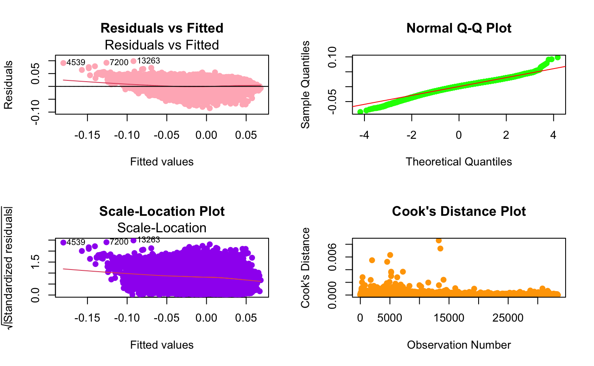
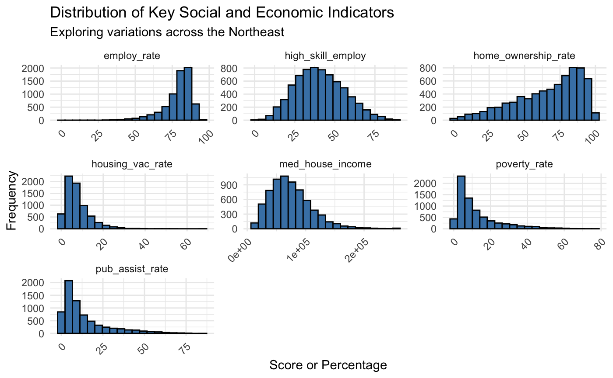
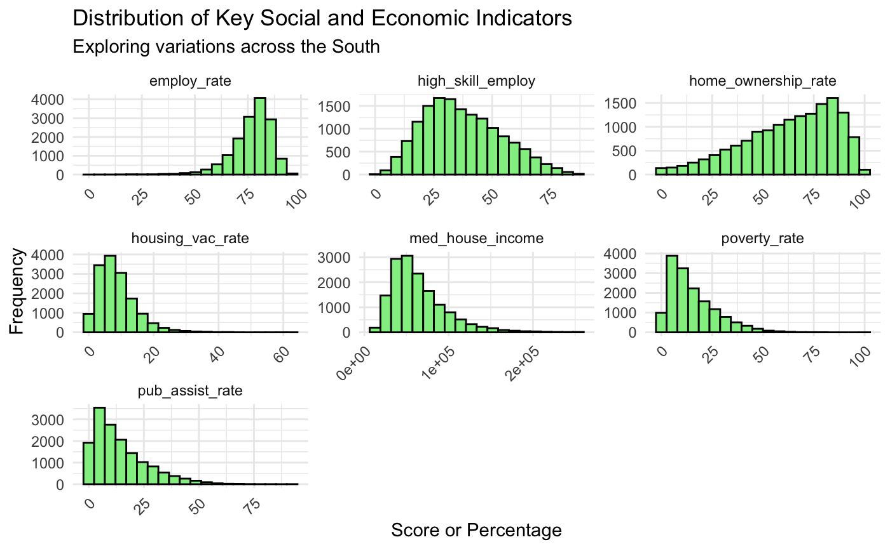
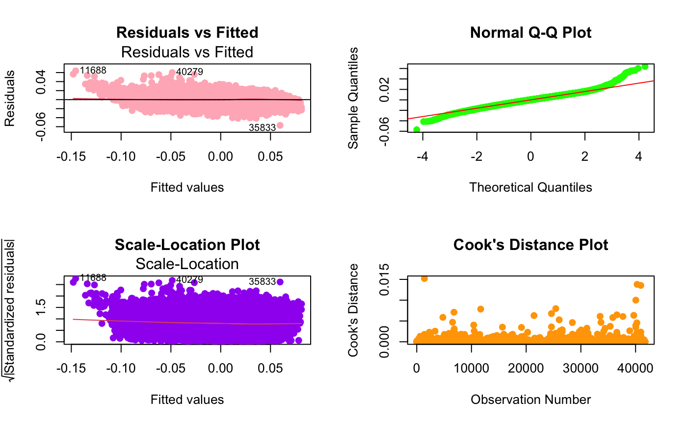

Analysis
We are interested in seeing how the distribution of z-scores varies across the United States. So we decided to split the cleaned data into regions rather than state by using the case_when() function. Organizing the data by region facilitates easier comparisons and provides a clearer understanding of the z_COI_nat` trends. We chose to create a bar graph of the weighted averages of the z_COI_nat data by region.
Distribution of Average COI Z-Score by Region

Since the Northeast region has the highest mean z-score and South has the lowest, we are focusing our analysis on these 2 regions. By graphing histograms and various linear models, we are interested in seeing how social and economic, health and environment, and education factors impact COI scores.
Education Domain Factors
Key Indicators of ED Factors in Northeast Region
Key Indicators of ED Factors in South Region
Analyzing the histograms of key education indicators for the Northeast and South regions, several patterns emerge that align with broader socioeconomic trends and disparities between these areas.
In the Northeast, histograms such as adult education attainment, college enrollment, and education centers suggest a robust educational infrastructure with moderate to high levels of engagement and attainment. For instance, the distribution of adult education attainment and college enrollment both exhibit a normal-like distribution, centered around moderate levels. This indicates a balanced distribution of educational levels, which likely contributes to a stronger economy and higher employment rates. The histogram for education centers, which is slightly skewed towards higher numbers, further supports the availability of educational resources. Such distributions align with a more robust economic environment where higher education levels and resource availability contribute positively to socioeconomic stability.
Conversely, the South shows a different pattern. The histograms for the same indicators display significant right skewness, especially in math proficiency and school poverty rates. These distributions suggest lower levels of achievement and higher instances of poverty within schools. The histogram for adult education attainment in the South also shows a pronounced decline as educational levels increase, indicating fewer adults achieve higher education levels. These educational challenges are mirrored in socioeconomic conditions, as reflected by lower median household incomes and a higher percentage of school-associated poverty.
Building on the examination of educational indicators using histographs, we conducted a regression analysis to determine which variables significantly impact the dependent variable (z_COI_nat). Among the independent variables, the variable prop_nonwhite exhibits the most significant impact with a coefficient of -0.02019, indicating that a unit increase in the proportion of the nonwhite population is associated with a decrease of approximately 0.02019 in the z_COI_nat, holding other variables constant. Similarly, the variable school_pov has a substantial negative coefficient of -0.0002494, suggesting that an increase in the school poverty rate by one unit leads to a decrease in z_COI_nat by roughly the same magnitude. In contrast, variables such as HS_gradrate and adult_edu_attainment, with coefficients of 0.0001139 and 0.0006891 respectively, show that higher levels of educational attainment correspond to positive increments in z_COI_nat.
Linear Models for Weighted Average of Education Domain z-scores, Nationally Normed

Residuals vs Fitted Plot: This plot helps to check the assumption of linearity and homoscedasticity in a regression model. Ideally, the residuals will be randomly distributed to indicate a good model fit. In this plot, the residuals appear to be somewhat randomly distributed, although there is a slight pattern indicating potential non-linearity or heteroscedasticity, where variances of residuals are not constant across the range of fitted values.
Normal Q-Q Plot: This plot helps assess whether the residuals are normally distributed, a key assumption in linear regression. The points in this plot follow the theoretical line closely in the central part but deviate slightly in the tails, suggesting some light deviations from normality, particularly with extreme values, which could be outliers or influential points affecting the regression model.
Scale-Location Plot: This plot also checks for homoscedasticity by plotting the square roots of the standardized residuals against the fitted values. If the variances of residuals are equal across all levels of the independent variables (homoscedasticity), the spread of residuals in this plot should be roughly constant across the range of fitted values. Here, the plot shows a cluster of points with a fairly consistent spread, suggesting that our model meets the assumption of equal variance reasonably well.
Cook’s Distance Plot: This plot identifies influential cases that might overly influence the regression model. Points with a Cook’s distance greater than a critical value (commonly 1 or 0.5) are considered potentially influential. The plot here shows most data points have low Cook’s distances, indicating that no single observation overly influences the overall model fit.
Health and Environment Factors
Key Indicators of HE Factors in Northeast Region

Key Indicators of HE Factors in South Region
As we take a closer look at the distribution of Key health and Economics indicators. The histograms for the Northeast region and the South region display a similar pattern. Based on the distribution of Key Health and However, there is a significant disparity between those two regions in terms of airborne micro particles factor. In the south region the distribution of this variable is more normal than the northeast region. Indicating the seasonality differences between those regions. On the other hand, the heat exposure distribution of the 2 regions also suggests a significant difference. As we noted, the attainment to health insurance is highly left skewed for both region. This skewed distribution suggests that the variable has a significant impact on the z score. For the green space access, the south region has higher variance than the northeast region suggesting that the green space access may be considered as a more influential factor in northeast region
Linear Models for Weighted Average of Health and Economic Domain z-scores, Nationally Normed

Residuals vs Fitted Plot: The plot is used to exam the linearity and homoscedasticity. Based on the graph presented, there is no unequal variance. However, there are some of points that lies outside of the plot, suggesting possible outliers.
Normal N-Q-Q Plot: This plot is used to test the residuals, as we can see from the graph the N-Q-Q plot for the health and environment domain, most of the cloud point lies on the line, suggesting a normal distribution.
Scale - Location Plot: Despite of some obvious outliers, the plot displays a constant spread across the plot, indicating homoscedasticity. We can see a horizontal line with equally random point, suggesting our model’s robustness.
Cook Distance Plot: For detecting influential observations, we use cook distance plot, as we can see from the plot, the overall cook distance is small indicating that there is no potential strongly influential observations. At the same time, the plot prove the homoscedasticity and no obvious outliers for the health and environment domain.
Social and Economic Factors
Key Indicators of SE Factors in Northeast Region

Key Indicators of SE Factors in South Region

Based on the distributions, high skill employment is the most normal. This indicates a moderate level of high skilled employment across the region. As a result, high skilled employment does not seem to have any major impact on the z-score since regions with disproportionately low levels of high skilled employment may experience higher levels of socioeconomic challenges. A skewed distribution such as employment rate stands out as a variable that heavily impacts the z-score. Employment rate is skewed to the left. The distribution suggests that a significant proportion of the population is employed and the Northeast region has a robust economy. Although poverty rate, housing vacancy rate, and public assistant rate are skewed right shows that most areas in the Northeast have low instances of these cases. This aligns with our Distribution by Average z-score by Region table which shows Northeast with the highest scores.
The South region follows the same pattern as the Northeast region. From analyzing the employment rate visual, the concentration of employment could also suggest challenges for unemployed individuals. This could potentially lead to issues such as income inequality. This is evident in the right skewed distribution of the median housing income graph. It shows that most of the population earns a lower income. This could be the reason the South region has a significantly lower z-score than the Northeast.
In order to determine which variable has the highest impact on the dependent variable (z_COI_nat), we decided to run a regression to examine the magnitude of the coefficients. The larger the absolute value of the coefficient, the stronger the impact of that variable on the dependent variable, holding other variables constant. Looking at the coefficients, the variable
employ_ratehas the largest (absolute value) coefficient, with an estimate of 8.193e-04. This suggests that for every unit increase in the employment rate, the z_COI_nat increases by approximately 8.193e-04 units, assuming all other variables remain constant. Additionally,med_house_incomealso has a substantial coefficient (1.676e-07), indicating that for every unit increase in median household income, the z_COI_nat increases by approximately 1.676e-07 units, holding other variables constant. This confirms our interpretations of the histograms for why Northeast has the highest z-scores and why South has the lowest.Linear Models for Weighted Average of Social and Economic Domain z-scores, Nationally Normed

Residuals vs Fitted Plot: This plot helps to check the assumption of linearity and homoscedasticity in a regression model. Ideally, the residuals will be randomly distributed to indicate a good model fit. Here, the residuals seem to be relatively evenly distributed around the horizontal line, but a slight fan shape suggests potential heteroscedasticity, where the variance of the residuals increases as the fitted values increase.
Normal Q-Q Plot: This plot is used to check the normality of residuals. The points should lie approximately along the reference line if the residuals are normally distributed. In this plot, most points align well with the line except for a slight deviation at the tails. This suggests that the residuals are mostly normal but with some possible deviations from normality at the extremes.
Scale-Location Plot: Similar to the first plot, this one also checks for homoscedasticity by plotting the square roots of the standardized residuals against the fitted values. The relatively constant spread across the range of fitted values suggests that variance is fairly constant (homoscedasticity), although, like the Residuals vs Fitted plot, there appears to be a slight increase in spread for higher fitted values. Another similarity is the presence of outliers, which suggest atypical levels of heteroscedasticity for those points.
Cook’s Distance Plot: This plot shows the influence of each observation on the fitted values. Observations with a Cook’s distance much larger than others can be considered influential to the model. Here, all observations have relatively low Cook’s distances, suggesting that no single observation is overly influential. Overall, the model shows a reasonable fit with some signs of potential heteroscedasticity and slight deviations from normality at the extremes. The lack of influential outliers is a good sign for the robustness of the model.